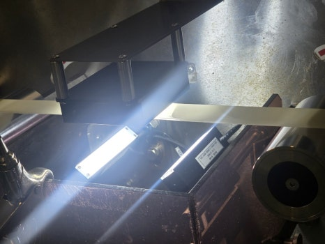
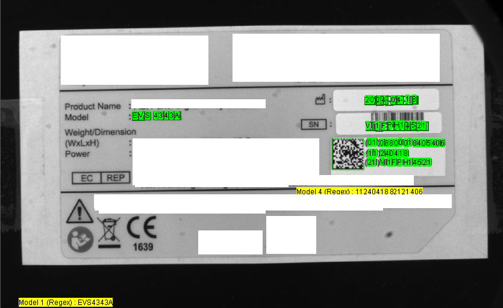

제약 필름 고속 비전검사
Roll to Roll 필름 이물, 귀퉁이 손상, 위치·치수, 생산일자 OCR, 포장지 인쇄 및 커팅 상태를 4대 카메라로 자동 검사한 사례입니다.
- 초당 약 3개 고속 검사
- 생산일자 OCR 및 인쇄 검증
- 작업자 육안 검사 최소화

Case Studies
ASPEC은 AI 비전검사, OCR검사, 바코드 판독, 정렬 검사, 로봇비전으로 실제 제조 현장의 검사 문제를 해결합니다. 장비 선정과 기존 설비 연동도 현장 조건에 맞춰 함께 검토합니다.
작업자 휴먼에러, OCR 인식 불량, 바코드 미판독, 제품 위치 편차, 난반사, 빠른 택타임 등은 실제 제조 현장에서 반복적으로 발생하는 문제입니다. ASPEC은 단순한 장비 공급이 아니라 카메라, 조명, 렌즈, AI 툴, 로봇·PLC·MES 연동까지 함께 고려하여 실제 생산라인에서 사용할 수 있는 검사 시스템을 구축합니다.
Project Library
AI 비전검사, OCR·OCV, 바코드 판독, 로봇비전, 광학 개선 등 제조 현장에서 적용한 머신비전 프로젝트를 유형별로 확인할 수 있습니다.

Roll to Roll 필름 이물, 귀퉁이 손상, 위치·치수, 생산일자 OCR, 포장지 인쇄 및 커팅 상태를 4대 카메라로 자동 검사한 사례입니다.

구겨지거나 상태가 좋지 않은 라벨에서도 AI OCR과 바코드 리딩을 동시에 수행하고 MES로 데이터를 자동 전송한 사례입니다.

미션 부품 나사탭 유무와 개수 차이, 제품 위치 편차로 룰베이스 검사가 어려운 조건을 Cognex AI Classification으로 해결한 사례입니다.

난반사가 심한 포장재에서 플랫돔 조명과 AI OCR을 적용해 유통기한을 인식하고, AI Classification으로 박스 포장 상태까지 검사한 사례입니다.

레이저 마킹된 Data Matrix 코드가 난반사로 읽혔다 안 읽혔다 하던 문제를 플랫돔 조명으로 개선하여 판독 속도를 단축한 사례입니다.

카메라와 로봇 좌표계를 캘리브레이션하고, 제품의 X·Y·θ 좌표를 로봇에 전달하여 포장·패키징 자동화를 구현합니다.
검색 조건에 맞는 구축사례가 없습니다.
Core Engineering
얼라인먼트, AI 딥러닝, OCR·OCV, 바코드·DPM 판독, 전용 검사 소프트웨어와 PLC·MES·로봇 연동까지 프로젝트에 필요한 기술을 함께 구성합니다.
초정밀 비전 정렬 검사
디스플레이, 반도체, 전자부품 공정에서 코그넥스 VisionPro와 PatMax 패턴 매칭을 적용해 위치 보정, 치수검사, 로봇 좌표 보정을 수행합니다.
디스플레이, 반도체, 전자부품 공정에서는 미세한 위치 오차가 품질 문제로 이어질 수 있습니다. ASPEC은 패턴매칭, 캘리브레이션, 로봇 좌표 변환을 통해 제품 위치와 회전각을 정밀하게 계산하고 스테이지·로봇·모터와 연동합니다.
디스플레이, 반도체, 전자부품 공정의 위치 보정, 치수검사, 로봇 좌표 보정
위치 보정, 치수검사, 로봇 좌표 보정
코그넥스 VisionPro와 PatMax 패턴 매칭
패턴 매칭, 좌표 보정, 로봇 가이드, 조명 조건
패턴 매칭, 좌표 보정, 로봇 가이드, 조명 조건까지 함께 검토한 정렬 검사 사례입니다.
AI 외관검사와 불량 분류
스크래치, 찍힘, 얼룩, 오염, 이물, 누락처럼 규칙 정의가 어려운 불량을 ai비전검사와 딥러닝 외관검사로 분류하고 작업자 판정 편차를 줄입니다.
제품 위치가 일정하지 않거나 색상·형상 편차가 큰 경우 기존 룰베이스 검사만으로는 안정적인 판정이 어렵습니다. ASPEC은 AI Classification, Object Detection, Segmentation, AI OCR 등을 활용해 현장 조건에 맞는 검사 시스템을 구축합니다.
스크래치, 찍힘, 얼룩, 오염, 이물, 누락
불량 형태가 일정하지 않고 규칙 정의가 어려운 제품
ai비전검사와 딥러닝 외관검사
딥러닝 판정을 적용한 외관검사와 불량 분류
불량 형태가 일정하지 않은 제품에 딥러닝 판정을 적용한 외관검사 사례입니다.
유통기한, 제조일자, LOT 번호, 라벨 인쇄, 각인 문자를 OCR검사와 OCV검사로 판독해 오인쇄, 누락, 흐림, 위치 틀어짐을 검사합니다.
유통기한, 제조일자, LOT 번호, 라벨 인쇄, 각인 문자
오인쇄, 누락, 흐림, 위치 틀어짐
OCR검사와 OCV검사
문자 판독과 인쇄 검증
문자 판독과 인쇄 검증을 함께 적용해 포장 품질을 안정화한 사례입니다.
바코드리더기와 생산 이력 추적
코그넥스 DataMan 바코드리더기, QR코드 리더기, DPM 판독 시스템을 적용해 고속 컨베이어와 다면 판독 환경에서 제품 추적성을 확보합니다.
제조 이력 관리와 MES 연동을 위해 1D/2D 바코드, Data Matrix, DPM 코드를 안정적으로 판독합니다. 난반사, 레이저 마킹, 제품 방향 불규칙, 고속 컨베이어 등 까다로운 환경에서는 리더기 성능뿐 아니라 조명과 설치 구조까지 함께 설계합니다.
고속 컨베이어와 다면 판독 환경의 바코드, QR코드, DPM 판독
고속 컨베이어와 다면 판독 환경에서 제품 추적성 확보
코그넥스 DataMan 바코드리더기, QR코드 리더기, DPM 판독 시스템
바코드 판독 결과를 생산 이력과 연결
바코드 판독 결과를 생산 이력과 연결해 추적성을 확보한 사례입니다.

검사 결과는 현장에서 바로 확인하고 추적할 수 있어야 합니다. ASPEC은 C#, SDK, PLC 통신, MES/POP 연동, 이미지 로그 저장, 통계 화면 등 고객 공정에 맞는 전용 소프트웨어를 개발합니다.
검사 결과, 이미지, 시간, LOT 정보를 저장합니다.
MES, POP, PLC, 로봇과 검사 시스템을 연동합니다.
현장 작업자가 사용하기 쉬운 화면과 통계 기능을 구성합니다.
ASPEC Blog
코그넥스 비전검사, AI 외관검사, OCR검사, 바코드리더기, 머신비전 조명·케이블 선정, PLC·MES 연동처럼 실제 현장에서 진행한 머신비전 구축 사례와 기술 메모를 ASPEC 네이버 블로그에 정리하고 있습니다.
제약·의료기기: OCR검사, 바코드리더기, 라벨 검사, UDI 추적
자동차 부품: AI 외관검사, 조립검사, 유무검사, 치수검사
전자·반도체: 정렬 검사, 위치 보정, 로봇비전, 2D·3D 검사
식품·화장품: 유통기한 OCR검사, 포장 인쇄 검사, QR코드 판독
작업자 육안 검사, OCR 인식 불량, 바코드 미판독, 로봇 위치 보정, AI 비전검사 적용 가능성 검토가 필요하다면 ASPEC이 현장 조건에 맞는 솔루션을 제안해 드립니다.